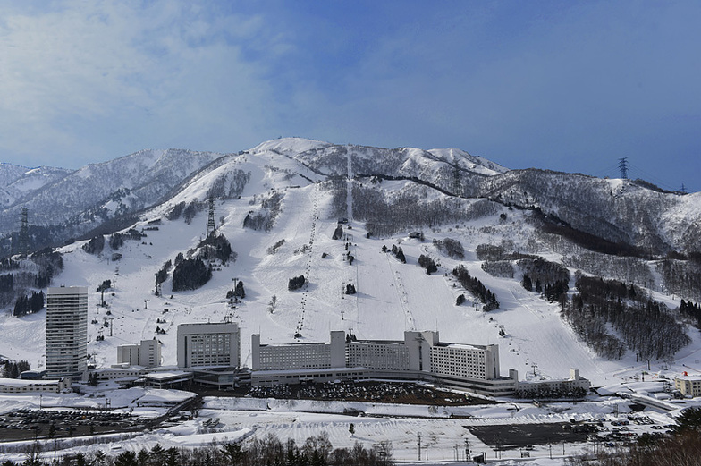
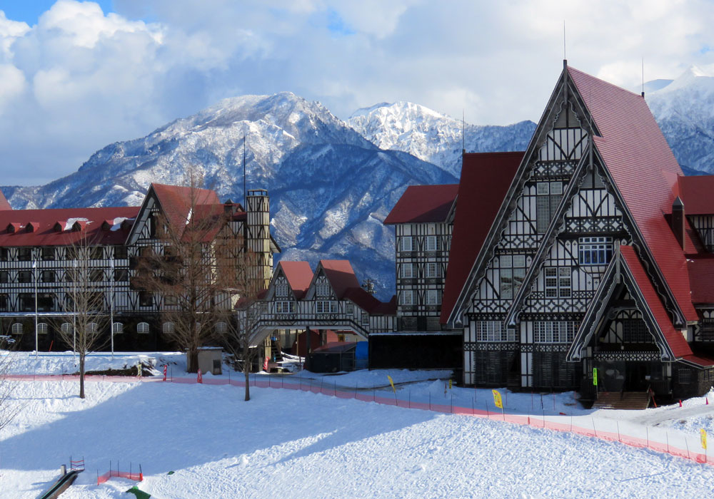

行程總覽
一場橫跨年末年初的日本滑雪之旅，從新潟的粉雪天堂到東京的都市探索。
出發
12/24 抵達成田機場
Skyliner 前往東京
苗場滑雪
12/26 — 12/28
苗場 + 神樂雪場
3 天滑雪
上越國際
12/29 — 12/31
日本最大單一雪場
3 天滑雪 + 夜滑
觀光 & 回程
1/1 — 1/4
越後湯澤 · 東京觀光
自由活動 · 回程
每日行程
12 月 24 日至 1 月 4 日的完整行程安排
抵達東京
- 成田機場抵達（hchsu 16:50 / yaowen, kuohh, hclee, syujy 19:20）
- Skyliner 前往上野（現場買票）
- 採買雪場所需物資
前往苗場
- 上野 → 越後湯澤（新幹線 Toki 323，13:46–14:56）
- 越後湯澤 → 二居田代（公車 15:30 發車）
- 購買苗場雪票
苗場滑雪 Day 1
- 苗場 + 神樂雪場全日滑雪
- 雪票：早鳥 ¥6,200 / 一般 ¥7,000 / 全山 ¥9,800
- 田代租借站可租雪具（需身份證明）
苗場滑雪 Day 2 [SB 教練日]
- 單板教練課程（calee / yaowen / syujy / yahsieh / 學妹）
- 單板教練課程（kuohh / hclee）
- 可滑至下午，已確認大眾班表
苗場滑雪 Day 3 → 移動至上越
- 苗場整日滑雪
- 公車回越後湯澤（末三便 17:00 / 18:30 / 19:47）
- JR 越後湯澤 → 浦佐（Urasa）
- 步行至民宿（1.1 公里，約 16 分鐘）
上越國際 Day 1
- 上越國際スキー場前駅搭車上山
- 電子票（文組持有）
- 可夜滑至 21:00（¥1,500）
- Annex 日歸溫泉
上越國際 Day 2
- 全日滑雪
- 22 條雪道、4 大區域
上越國際 Day 3 — 跨年夜
- 全日滑雪
- 跨年夜滑雪迎接新年
新年觀光 → 回東京
- 越後湯澤觀光（ぽんしゅ館、溫泉等）
- 新幹線 Tanigawa 86 回東京（17:08→18:20）
東京自由活動
- 10:45 モンハン酒場（9 人，ID: 2VN4SJ）
- yahsieh 成田 19:30 離開
- 自由活動
東京自由活動
- 自由活動
- 推薦：備長名古屋鰻魚飯（東京天空樹店）
回程日
- yaowen / hclee / kuohh / syujy — 成田 13:00
- hchsu — 成田 15:30
- calee — 成田 17:00
雪場介紹
兩座新潟縣頂級雪場，享受日本最優質的粉雪體驗

苗場滑雪場 + 神樂
Mt. Naeba / Kagura — 新潟縣湯澤町
雪票價格
| 類型 | 1 人 | 2 人 | 4 人 |
|---|---|---|---|
| 早鳥預售 | ¥6,200 | ¥12,000 | ¥23,600 |
| 當日券 | ¥7,000 | — | — |
| 全山滑走 | ¥9,800 | — | — |

上越國際滑雪場
Joetsu Kokusai Ski Resort — 新潟縣南魚沼市
雪票 & 租借
| 項目 | 價格 |
|---|---|
| 1 日券 | ¥3,900 |
| 雪具 Set | ¥5,000 |
| Rental Set（1日券+雪具） | ¥8,900 |
| 夜滑 | ¥1,500 |
行程地圖
從東京出發，前往新潟雪國的完整路線
住宿安排
從溫馨民宿到都市飯店，每晚的落腳處
APA Hotel 上野稻荷町駅北
📍 東京都台東區
抵達東京首晚住宿，鄰近上野車站，方便隔日搭乘新幹線前往越後湯澤。
Little Japan Echigo
📍 新潟縣湯澤町（苗場附近）
苗場雪場附近的溫馨民宿，3+3+3 人房配置。提供簡易廚房（IH 爐、冰箱、微波爐、電鍋）、免費飲品（咖啡、紅茶、綠茶）。
浦佐 Airbnb 民宿
📍 新潟縣南魚沼市浦佐
靠近上越國際滑雪場的村舍，4 間臥室、8 張床、2.5 間浴室。從浦佐站步行約 16 分鐘（1.1 公里）。
APA Hotel 人形町駅東
📍 東京都中央區
東京觀光期間住宿，7 間房（2 間雙人 + 5 間單人）。位於日本橋人形町，交通便利，周邊美食豐富。
交通資訊
新幹線、公車、Skyliner — 完整的交通接駁安排
成田機場 → 上野
Skyliner（現場買票）約 41 分鐘
12/24上野 → 越後湯澤
上越新幹線 Toki 323（13:46 → 14:56）約 70 分鐘
12/25越後湯澤 → 苗場（二居田代）
公車 約 45 分鐘（末三便 15:30 / 17:15 / 18:40）
12/25苗場 → 越後湯澤
公車（末三便 17:00 / 18:30 / 19:47）
12/28越後湯澤 → 浦佐
JR 上越線（彈性時間）
12/28浦佐 → 上越國際スキー場前駅
JR 上越線（車站直達雪場）
12/29–31越後湯澤 → 東京
上越新幹線 Tanigawa 86（17:08 → 18:20）約 72 分鐘
1/1東京 → 成田機場
Skyliner 回程
1/2–4觀光景點
滑雪之外，探索越後湯澤與東京的精彩
🍶 越後湯澤 / 南魚沼
清津峽 / Tunnel of Light
日本三大峽谷之一，隧道內的藝術裝置將自然與現代藝術完美結合。鏡面水池倒映峽谷美景，是新潟最具代表性的打卡景點。
星峠梯田
被選為「日本棚田百選」的絕美梯田，冬季被白雪覆蓋時呈現夢幻般的景色。
🗼 東京
備長名古屋鰻魚飯
東京天空樹 Solamachi 店。正宗名古屋鰻魚三吃（ひつまぶし），可享受三種不同吃法。
モンハン酒場
Monster Hunter 主題餐廳，1/2 上午 10:45 已預約 9 人（ID: 2VN4SJ）。
⛩️ 關西（Calee 個人行程 12/19–12/25）
京都景點
鴨川、祗園、三千院、延曆寺、嵐山祐斎亭、車折神社、下鴨神社、貴船神社、京都御苑、三十三間堂、上賀茂神社、東寺、宇治
天橋立
日本三景之一。推薦搭 JR 直達車「はしだて特急」從京都出發（約 2 小時）。飛龍觀回廊的「從跨下窺看」是必做體驗。
京都美食
Gion Duck Rice、THE TERMINAL KYOTO、上賀茂神社旁神馬堂麻糬（需早上 10 點前排隊）
大阪美食
松よし（鶴橋燒肉）、Tori Soba Zagin（雞白湯拉麵）、Tempura nuu nuu（天婦羅）、Yakitori Matsuri（北新地燒鳥）
燕三條
12/25 下午前往。日本金屬加工重鎮，以菜刀、餐具聞名世界。燕三條 Wing 可參觀職人工藝。
團員資訊
雪具需求與航班資訊一覽
| 成員 | 滑雪類型 | 雪具需求 | 抵達 | 離開 |
|---|---|---|---|---|
| calee | 單板 SB | 全套自備 | 12/20 起日本 remote | 1/4 成田 17:00 |
| yahsieh | 單板 SB | 全套自備 | 12/7 起日本 remote | 1/2 成田 19:30 |
| yaowen | 單板 SB | 需要單板 | 12/24 成田 19:20 | 1/4 成田 13:00 |
| syujy | 單板 SB | 需要單板 | 12/24 成田 19:20 | 1/4 成田 13:00 |
| kuohh | 單板 SB | 需要單板 + 鞋子 | 12/24 成田 19:20 | 1/4 成田 13:00 |
| hclee | 單板 SB | 需要單板 + 鞋子 | 12/24 成田 19:20 | 1/4 成田 13:00 |
| yysung | 雙板 SK | 需要雙板 + 雪杖 | 12/24 | 未定 |
| wangtr | 雙板 SK | 需要雙板 + 雪杖 | 12/24 | 未定 |
| hchsu | 雙板 SK | 需要雙板 + 鞋子 + 雪杖 | 12/24 成田 16:50 | 1/4 成田 15:30 |
教練安排
單板教練 — 第一組
calee / yaowen / syujy / yahsieh / 學妹
12/27（六）單板教練 — 第二組
kuohh / hclee
12/27（六）雙板教練
yysung（偏好中文教練，一整天）
待定籌備歷程
從初步構想到最終定案的完整討論過程
0 初步構想
最初考慮的目的地涵蓋全球：法國三峽谷、霞慕尼，奧地利 Arlberg，義大利多洛米蒂，日本岩手夏油高原、長野，以及哈爾濱。經過假期統計與討論，決定分為兩個團：2026 年歐洲/紐西蘭/北美團，以及 2025 年底日本團。
日本雪場候選：白馬岩越、白馬八方尾根、白馬五龍、志賀高原、奧志賀高原、高鷲 Snow Park。
提出三個方案投票：(1) 高鷲 Snow Park + 名古屋觀光 (2) 白馬兩雪場 + 觀光 (3) 志賀高原兩雪場 + 觀光。
1 地點與日期定案
投票結果：白馬方案獲得最多支持（yahsieh、yaowen、hclee、Calee）。日期定案為 12/25–1/4 滑雪，12/20–12/25 個人自由安排。機票方向：去程可選大阪或東京，回程統一東京。
觀光願望清單：大阪京都、名古屋、白馬村、長野縣、金澤 21 世紀美術館、安康魚、河豚。
2 行程草案
雪場方案調整為苗場 + 上越國際。制定初版行程表：12/25 抵達東京後前往苗場，12/26–28 苗場滑雪，12/28 移動至上越，12/29–31 上越滑雪，1/1 後回東京觀光。
住宿研究：苗場王子飯店（4 人房 ¥15,951/天/人）、上越地區待定。
3 交通與住宿確認
確認苗場交通：從越後湯澤有公車，單程 45 分鐘，最早 8:12 發車。苗場雪票一日 ¥7,200。
已訂住宿：苗場 — Little Japan Echigo（Booking.com）、上越 — Airbnb 村舍（4 臥室 8 床 2.5 浴室）。
4 景點研究與教練
深入研究周邊景點：湯澤/南魚沼（ぽんしゅ館、清津峽、八海山索道、星峠梯田）、沼田（溫泉、城遺址）、前橋（不倒翁體驗、赤城神社）、新潟市（佐渡金山、燕三條菜刀、彌彥神社）。
教練聯繫：SNOWDAY、SNOWPiNK。
5 最終行程確認
確認所有成員時間與進出方式。最終行程表定案，教練分組確認：單板兩組、雙板一組。新幹線時刻確認，住宿從苗場王子飯店改為神樂民宿。
6 預訂完成
新幹線 Toki 323 已訂（0 元票，現場可能需處理付款）。Skyliner 現場買票。APA Hotel 1/1–1/4 官網預約完成（現場付款）。苗場雪票可出國前訂。上越國際電子票已訂。
東京美食：備長名古屋鰻魚飯（天空樹店）。